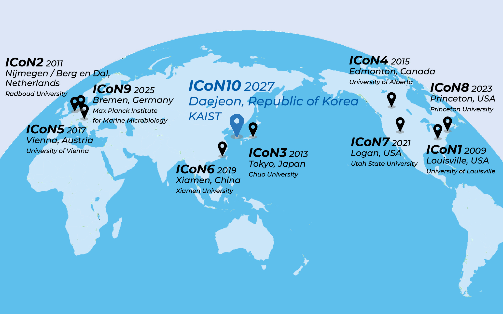

Program
View the preliminary schedule, session topics, and key conference events.
View program →
The Tenth International Conference on Nitrification and Related Processes

The ICoN meetings are the premier opportunity to showcase research on nitrification and related processes in the nitrogen cycle. ICoN conferences bring together academic, government, and private-sector researchers to share scientific discoveries, innovations, and critical societal impacts of the global biogeochemical nitrogen cycle. The conference is held every two years and rotates locations between North America, Europe and Asia.
In accordance with tradition, ICoN10 will encompass a broad range of topics including microbial physiology, metabolism and biochemistry; biological nitrogen removal and greenhouse gas control; terrestrial nitrogen cycling; marine and freshwater nitrogen cycling; and advances in experimental and computational methods. We particularly encourage active participation by young investigators through an expanded Early Career Scientist program.
Go to
View the preliminary schedule, session topics, and key conference events.
View program →Find registration information and register.
Registration details →Find information about the venue, transportation, accommodation, and local attractions.
Venue information →